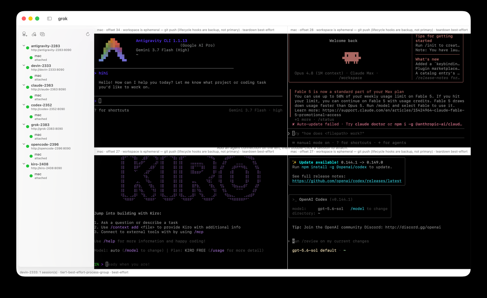

A terminal for the container your coding agent is working in — in your own cluster, reached over your own private network.

Your agent runs somewhere. When it leaves something half-finished, you want a shell there — same image, same workspace, same files — not a reproduction of it on your laptop. OpenAB Connect opens that shell.
The shell is deliberately powerless. It opens as
uid 1000 with no sudo, no service-account token, no host
credentials, a read-only root filesystem and an ephemeral workspace.
The runtime never listens on a routable address. A Tailscale sidecar is the only thing on the network, and the two talk over loopback inside the pod.
Kubernetes or ECS Fargate. The app does the deployment; these are the same manifests it uses, if you would rather read them first.
kubectl apply -f deploy/k8s/pod-tailscale.yaml # openabdev/openab-pty
One image per agent CLI — Claude Code, Codex, Cursor, Kiro, Gemini, Copilot
and others. The native variant carries no agent at all.
The app ships an offline Demo Mode in its app menu: two sample connections and a canned terminal, with no network connection of any kind. It is there so the app can be evaluated before you deploy anything.